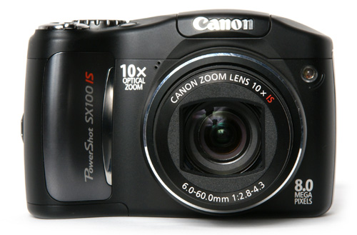
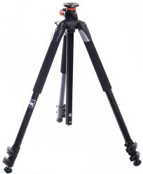
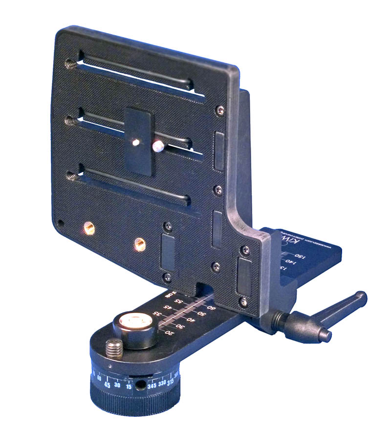

|
Table of contents
|
Image acquisition
Base set of images were taken using "Canon SX100" camera, tripod and a Kaidan head. We took indoor images at the Capitol and the CS corridor. Outdoor images were taken around the Capitol, from the bridge near State Street and State street junction. Additionally, we took a set of images of the CS corridor with multiple exposures in order to perform HDR with different panaroma.



|